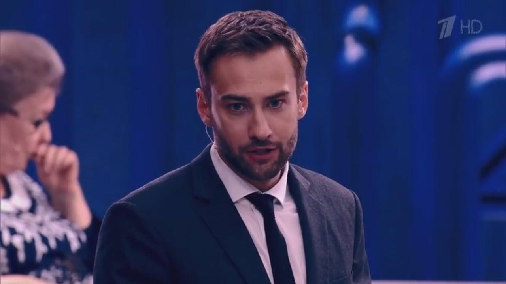

«На самом деле» – программа, в которой невозможно солгать, так как участники подключены к детектору лжи.
Популярный телеведущий Геннадий Малахов неожиданно ушел с Первого канала несколько лет назад, и с тех пор так и не не раскрыл причину этого поступка. Существует множество неподтвержденных версий. По одной из них, Геннадий Петрович был замешан в скандале с аптечной мафией города . Сегодня Геннадий Малахов в нашей студии, и совсем скоро мы узнаем всю правду из его уст.

Ведущий передачи Дмитрий Шепелев приветствует своего гостя и переходит сразу к делу.
Дмитрий Шепелев: Здравствуйте, Геннадий Петрович! Готовы ответить на вопросы?
Геннадий Петрович Малахов: Да, конечно. Именно для этого я и пришел.
Детектор лжи (полиграф) включен
Дмитрий Шепелев: Ваше имя – Геннадий?
Геннадий Петрович Малахов: Да
Ответ полиграфа: Это правда
Дмитрий Шепелев: До недавнего времени вы вели программы о здоровье на Первом канале?
Геннадий Петрович Малахов: Да, мне пришлось уволиться в 2014, три года назад.
Ответ полиграфа: Это правда
Дмитрий Шепелев: Вы сами ушли с Первого канала?
Геннадий Петрович Малахов: Сам, но я был вынужден это сделать, потому что на меня оказывалось давление.
Дмитрий Шепелев: Не моли бы вы рассказать, что стало причиной разногласий с руководством Первого канала?
Геннадий Петрович Малахов: Для меня всегда на первом месте всегда было здоровье людей. И в 2014 я узнал о совершенно новом, в тот год только разработанном, натуральном средстве для восстановления больных суставов. Я записал цикл передач, посвященных болезням суставов, поднял эту скользкую тему, в результате появились разногласия с руководством, если быть точнее, с с самим Константином Эрнстом, и меня настоятельно попросили уйти.
Дмитрий Шепелев: Геннадий Петрович, задам вам прямой вопрос и хочу получить на него такой же прямой ответ.
Геннадий Малахов молчит, видно, как у него повышается пульс. Он начинает волноваться.
Дмитрий Шепелев: Ходят слухи, что лекарство для суставов, о котором идет речь, давно уже сертифицировано в СНГ и может спасти от инвалидности миллионы людей, но его не пускает в продажу так называемая аптечная мафия. И здесь же замешан ваш бывший руководитель. Правда ли это?
Зал замер, ждет ответа Малахова. Он некоторое время молчит.
Геннадий Петрович Малахов: Да, это правда. Этот препарат действительно и позволяет восстановить даже сильно разрушенные суставы всего за месяц приема. Это средство способно спасти многих людей от боли и страданий, от ограничений подвижности и инвалидности. Препарат уже более года назад прошел все необходимые клинические испытания, которые показали его крайне высокую эффективность (оно эффективнее всех известных аналогов в 5-7 раз)! Это средство реально может спасти от инвалидности, однако его искусственно не пускают на рынок… И да, к сожалению, Константин Львович также приложил к этому руку.
Дмитрий Шепелев: И что же это за средство?
Геннадий Петрович Малахов: Это гель для суставов Сустафаст. В нем ценнейшие натуральные действующие вещества! Достаточно увидеть результаты клинических испытаний, чтобы понять, насколько это эффективное и нужное средство.
Дмитрий Шепелев: Выведите, пожалуйста, на экран результаты клинических испытаний Сустафаст, проведенные в Московском научном центре ревматологии:
Дмитрий Шепелев: Впечатляет! И этот гель не продается в аптеках?
Геннадий Петрович Малахов: Нет. В том то и дело. Разработка прошла многоступенчатое тестирование в США, России, Казахстане, Беларуси, Украине, Германии и Израиле и получила все необходимые лицензии и сертификаты качества. Однако в России и Казахстане. в частности в городе его не пропустили в аптечные сети. Причем затормозили на самом высоком уровне. Без объяснения причин.
Дмитрий Шепелев: Но это же самое настоящее преступление!
Геннадий Петрович Малахов: Именно этому расследованию я и хотел посвятить свои последние передачи. Однако, узнав об этом, Константин Эрнст не просто “зарезал” мою программу, но и в самой грубой ультимативной форме потребовал моего увольнения с Первого канала.

Дмитрий Шепелев: Но причины все-таки известны?
Геннадий Петрович Малахов: Они очевидны. Достаточно просто посмотреть на прилавки наших аптек, и на то, какие лекарства для лечения суставов там продаются. Хондропротекторы (которые уже 10 лет запрещены в Европе из-за того, что они делают хрящ затвердевшим и, как следствие, еще больше ухудшают состояние сустава), а также различные сомнительные мази, которые не лечат, а лишь временно купируют боль.
Наши аптеки экономически не заинтересованы в том, чтобы люди становились здоровыми. Им это просто невыгодно. Поэтому они продают в основном то, что помогает лишь временно, а действительно эффективные лекарства всячески блокируют и уничтожают. Обратите внимание: на Первом канале крутят рекламу именно этих, дорогих и бесполезных аптечных средств. Как мне стало понятно, руководство канала — в доле. Это настоящая мафия!
Дмитрий Шепелев: Геннадий Петрович, ходят слухи, что большую часть информации по этому вопросу вам предоставил известный российский врач-ортопед Бубновский Сергей Михайлович, который при этом при этом предпочел остаться в тени. Так ли это?
Геннадий Петрович Малахов Да, это так. Сергей Михайлович мой давний знакомый, прекрасный врач!
Дмитрий Шепелев Было сложно уговорить Сергея Михайловича стать участником нашей передачи, но все-таки нам это удалось. Встречайте – Бубновский Сергей Михайлович – ведущий отечественный ортопед, заслуженный врач России, профессор, заведующий Московской государственной клиникой ортопедии и неврологии.
Дмитрий Шепелев Сергей Михайлович, скажите, известен ли вам такой препарат как Сустафаст? Действительно ли он настолько хорош, как говорит об этом Геннадий Петрович?
Сергей Бубновский Да, мне известен этот препарат. И известна его эффективность. На сегодняшний день это единственный препарат, который позволяет именно восстановить разрушенную хрящевую ткань и вернуть подвижность суставов. Но, к сожалению, в наших аптеках его не купить. И тут замешаны очень большие деньги и очень серьезные люди.
Дмитрий Шепелев: Можете рассказать, кто?
Сергей Бубновский: Извините, я не могу и не буду отвечать на подобные вопросы. Геннадий Петрович и так вам слишком много рассказал.
Бубновский срывает датчики и уходит из студии. Зал снова начинает шуметь.
Дмитрий Шепелев: Такое в нашей студии впервые.
Зал начинает возмущаться, ведущему с трудом удается успокоить присутствующих.

Дмитрий Шепелев: Геннадий Петрович, еще вопрос к вам. Опять-таки ходят слухи, что сегодня Сустафаст все-таки можно где-то купить, причем по весьма доступной цене. Так ли это?
Геннадий Петрович Малахов: Это так. После ухода с Первого канала я передал всю имеющуюся у меня информацию государственному движению «Здоровое население», которое совместно с НИИ Ревматологии проводит специальную акцию, целью которой является распространение геля Сустафаст среди нуждающихся в нем граждан России, Казахстана, Беларуси и Украины.
В рамках этой акции любой житель стран СНГ может заказать уникальный препарат для безоперационного восстановления суставов Сустафаст всего за 99 рублей для граждан России или 550 тенге для жителей Казахстана.
Для этого нужно успеть оставить заявку на официальном сайте производителя до 16 ноября 2017г. (включительно).
Дмитрий Шепелев: Огромное спасибо вам, Геннадий Петрович, за то, что посетили нашу передачу и рассказали правду.
Геннадий Петрович Малахов: Надеюсь, что хоть кому-нибудь этот препарат поможет стать здоровым. Тогда и мой уход с Первого канала был бы не зря.
После выхода передачи в эфир количество заявок на препарат Сустафаст значительно возросло. Если вы из города или близлежащего района, то для вас действует специальная акция, в рамках которой первые 20 заказавших сегодня смогут получить гель Сустафаст по сниженной в 2 раза цене! Акция действует по ссылке ниже:
Официальный сайт производителя
Сустафаст

Внимание! Ввиду того, что информация о геле Сустафаст появилась на многих сайтах и число заявок на него растет, запасы Сустафаст стремительно уменьшаются. Поэтому если вы хотите восстановить суставы, закажите Сустафаст, пока он еще есть в наличии в городе


Комментарии
Большое спасибо за передачу. Очень интересная и эмоциональная. Сустафаст заказала, обязательно расскажу о нем всем своим знакомым.
Тоже заказал. Хорошо, что есть люди, которым не все равно. Стал значительно лучше относиться к Малахову после этого всего. А вот про Эрнста никогда бы не подумал! Казалось бы, и так у тебя этих денег- лопатой греби! Так ему все мало, уже и на здоровье людей наживается!
Полностью подтверждаю! Сустафаст – просто великолепное средство. У меня болел сустав на ноге лет 5 больше даже. Ничего не помогало. Кстати доставили оперативно, за пару дней буквально. Я сама в городе живу .Как стала принимать ээто средство, прошел примерно за 3 недели. После этого не болел ни разу! Рекомендую попробовать всем.
Тоже есть опыт использования Этих капсул и тоже положительный. Был артрит. Вылечил, что показало соответствующее обследование.
Читала про Сустафаст в какой-то медицинской газете. Там многие врачи и ученые его хвалили, говорят прорыв в фармакологии.
Эрнст- скотина! Неужели нельзя и его, и всю эту кодлу с первого канала привлечь к ответственности? Это же коррупция! Разбой!
Подруга рассказывала про это средство. Очень хорошо про него отзывалась. Она инвалидом стала из-за суставов. Очень часто жаловалась, как они болят и ее мучают. В последнее время говорит, не болят совсем. Даже без палочки теперь иногда ходит.
У мужа был остеохондроз. Ходили сначала по врачам, не помогло. Потом по всяким целителям – об этом даже говорить не хочется. Примерно недели 3 назад узнали про Сустафаст. Примерно 2 недели принимает. Улучшения уже есть и они существенные.
Сделал заявку. Обещали в течение недели смогу получить на почте. Оперативно. Живу в Курске
Заказала
Болели суставы в коленях. Ноющая боль сопровождала почти всего. Пробовала многие препараты и процедуры, даже разные народные рецепты. Ничто не помогало так, как Сустафаст. Это препарат настоящее чудо!
Артроз суставов прошел примерно за 2 недели приема Сустафаст. Все-таки наши ученые лучшие в мире!
Спасибо!
Болели суставы в коленях. Ноющая боль сопровождала почти всего. Пробовала многие препараты и процедуры, даже разные народные рецепты. Ничто не помогало так, как этот гель — настоящее чудо! Теперь вот снова йогой занимаюсь!